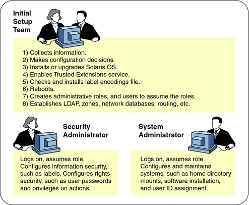

Solaris Trusted Extensions Administrator's Procedures
|
||||||||||||||||||||||||||||||||||||||||||||||||
|
Part I Initial Configuration of Trusted Extensions 1. Security Planning for Trusted Extensions Results of Enabling Trusted Extensions From an Administrator's Perspective 2. Configuration Roadmap for Trusted Extensions 3. Adding Solaris Trusted Extensions Software to the Solaris OS (Tasks) 4. Configuring Trusted Extensions (Tasks) 5. Configuring LDAP for Trusted Extensions (Tasks) 6. Configuring a Headless System With Trusted Extensions (Tasks) Part II Administration of Trusted Extensions 7. Trusted Extensions Administration Concepts 8. Trusted Extensions Administration Tools 9. Getting Started as a Trusted Extensions Administrator (Tasks) 10. Security Requirements on a Trusted Extensions System (Overview) 11. Administering Security Requirements in Trusted Extensions (Tasks) 12. Users, Rights, and Roles in Trusted Extensions (Overview) 13. Managing Users, Rights, and Roles in Trusted Extensions (Tasks) 14. Remote Administration in Trusted Extensions (Tasks) 15. Trusted Extensions and LDAP (Overview) 16. Managing Zones in Trusted Extensions (Tasks) 17. Managing and Mounting Files in Trusted Extensions (Tasks) 18. Trusted Networking (Overview) 19. Managing Networks in Trusted Extensions (Tasks) 20. Multilevel Mail in Trusted Extensions (Overview) 21. Managing Labeled Printing (Tasks) 22. Devices in Trusted Extensions (Overview) 23. Managing Devices for Trusted Extensions (Tasks) 24. Trusted Extensions Auditing (Overview) 25. Software Management in Trusted Extensions (Tasks) Creating and Managing a Security Policy Site Security Policy and Trusted Extensions Computer Security Recommendations Physical Security Recommendations Personnel Security Recommendations Additional Security References B. Using CDE Actions to Install Zones in Trusted Extensions Associating Network Interfaces With Zones by Using CDE Actions (Task Map) Preparing to Create Zones by Using CDE Actions (Task Map) Creating Labeled Zones by Using CDE Actions (Task Map) C. Configuration Checklist for Trusted Extensions Checklist for Configuring Trusted Extensions D. Quick Reference to Trusted Extensions Administration Administrative Interfaces in Trusted Extensions Solaris Interfaces Extended by Trusted Extensions Tighter Security Defaults in Trusted Extensions Limited Options in Trusted Extensions E. List of Trusted Extensions Man Pages Trusted Extensions Man Pages in Alphabetical Order |
Planning for Security in Trusted ExtensionsThis section outlines the planning that is required before enabling and configuring Trusted Extensions software. For a checklist of Trusted Extensions configuration tasks, see Appendix C, Configuration Checklist for Trusted Extensions. If you are interested in localizing your site, see For International Customers of Trusted Extensions. If you are interested in running an evaluated configuration, see Understanding Your Site's Security Policy. Understanding Trusted ExtensionsThe enabling and configuration of Trusted Extensions involves more than loading executable files, specifying your site's data, and setting configuration variables. Considerable background knowledge is required. Trusted Extensions software provides a labeled environment that is based on the following concepts:
Understanding Your Site's Security PolicyTrusted Extensions effectively enables you to integrate your site's security policy with the Solaris OS. Thus, you need to have a good understanding of the scope of your policy and the ability of Trusted Extensions software to accommodate that policy. A well-planned configuration must provide a balance between consistency with your site security policy and convenience for users who are working on the system. Trusted Extensions is configured by default to conform with the Common Criteria for Information Technology Security Evaluation (ISO/IEC 15408) at Assurance Level EAL4 against the following protection profiles:
To meet these evaluated levels, you must configure LDAP as the naming service. Note that your configuration might no longer conform with the evaluation if you do any of the following:
For more information, see the Common Criteria web site. Devising an Administration Strategy for Trusted ExtensionsThe root user or the System Administrator role is responsible for enabling Solaris Trusted Extensions. You can create roles to divide administrative responsibilities among several functional areas:
As part of your administration strategy, you need to decide the following:
Devising a Label StrategyPlanning labels requires setting up a hierarchy of sensitivity levels and a categorization of information on your system. The label encodings file contains this type of information for your site. You can use one of the label_encodings files that are supplied on the Solaris Trusted Extensions installation media. You could also modify one of the supplied files, or create a new label_encodings file that is specific to your site. The file must include the Sun-specific local extensions, at least the COLOR NAMES section. Caution - If you are supplying a label_encodings file, you must have the final version of the file ready before rebooting the system after you enable the Trusted Extensions service. The file should be on removable media. Planning labels also involves planning the label configuration. After enabling the Trusted Extensions service, you need to decide if the system can run at a single label only, or if the system can run at multiple labels. If all of your non-administrative users can operate at the same security label, select a single-label system. You can also configure whether labels display and which label name format is displayed. For more information, see Solaris Trusted Extensions Label Administration. You can also refer to Compartmented Mode Workstation Labeling: Encodings Format. For International Customers of Trusted ExtensionsWhen localizing a label_encodings file, international customers must localize the label names only. The administrative label names, ADMIN_HIGH and ADMIN_LOW, must not be localized. All labeled hosts that you contact, from any vendor, must have label names that match the label names in the label_encodings file. Trusted Extensions supports fewer locales than does the Solaris OS. When you are working in a locale that Trusted Extensions does not support, text that is specific to Trusted Extensions, such as error messages about labels, is not translated into your locale. Solaris software continues to be translated into your locale. Planning System Hardware and Capacity for Trusted ExtensionsSystem hardware includes the system itself and its attached devices. Such devices include tape drives, microphones, CD-ROM drives, and disk packs. Hardware capacity includes system memory, network interfaces, and disk space.
Planning Your Trusted NetworkFor assistance in planning network hardware, see Chapter 2, Planning an IPv4 Addressing Scheme (Tasks), in System Administration Guide: IP Services. As in any client-server network, you need to identify hosts by their function, that is, server or client, and configure the software appropriately. For assistance in planning, see Solaris Express Installation Guide: Custom JumpStart and Advanced Installations. Trusted Extensions software recognizes two host types, labeled and unlabeled. Each host type has a default security template, as shown in Table 1-1. Table 1-1 Default Host Templates in Trusted Extensions
If your network can be reached by other networks, you need to specify accessible domains and hosts. You also need to identify which Trusted Extensions hosts are going to serve as gateways. You need to identify the label accreditation range for these gateways, and the sensitivity label at which data from other hosts can be viewed. The smtnrhtp(1M) man page provides a complete description of each host type with several examples. Planning for Zones in Trusted ExtensionsTrusted Extensions software is added to the Solaris OS in the global zone. You then configure non-global zones that are labeled. You can create one labeled zone for every unique label, though you do not need to create a zone for every label. Part of zone configuration is configuring the network. Labeled zones must be configured to communicate with the global zone and with other zones on the network.
Trusted Extensions Zones and Solaris ZonesLabeled zones differ from typical Solaris zones. Labeled zones are primarily used to segregate data. In Trusted Extensions, regular users cannot remotely log in to a labeled zone. The only interactive interface to a labeled zone is by using the zone console. Only root can gain access to the zone console. Zone Creation in Trusted ExtensionsTo create a labeled zone involves copying the entire Solaris OS, and then starting the services for the Solaris OS in every zone. The process can be time-consuming. A faster process is to create one zone, then to copy that zone or clone the contents of that zone. The following table describes your options for zone creation in Trusted Extensions. Solaris zones affect package installation and patching. For more information, see the following references: Planning for Multilevel AccessTypically, printing and NFS are configured as multilevel services. To access multilevel services, a properly configured system requires that every zone be able to access one or more network addresses. The following configurations provide multilevel services:
A system that meets the following two conditions cannot provide multilevel services:
If users in labeled zones are not supposed to have access to a local multilevel printer, and you do not need NFS exports of home directories, then you can assign one IP address to a system that you configure with Trusted Extensions. On such a system, multilevel printing is not supported, and home directories cannot be shared. A typical use of this configuration is on a laptop. Planning for the LDAP Naming Service in Trusted ExtensionsIf you are not planning to install a network of labeled systems, then you can skip this section. If you plan to run Trusted Extensions on a network of systems, use LDAP as the naming service. For Trusted Extensions. a populated Sun JavaTM System Directory Server (LDAP server) is required when you configure a network of systems. If your site has an existing LDAP server, you can populate the server with Trusted Extensions databases. To access the server, you set up an LDAP proxy on a Trusted Extensions system. If your site does not have an existing LDAP server, you then plan to create an LDAP server on a system that is running Trusted Extensions software. The procedures are described in Chapter 5, Configuring LDAP for Trusted Extensions (Tasks). Planning for Auditing in Trusted ExtensionsBy default, auditing is turned on when Trusted Extensions is installed. Therefore, by default, root login and root logout are audited. To audit the users who are configuring the system, you can create roles early in the configuration process. For the procedure, see Creating Roles and Users in Trusted Extensions. Planning auditing in Trusted Extensions is the same as in the Solaris OS. For details, see Part VII, Solaris Auditing, in System Administration Guide: Security Services. While Trusted Extensions adds classes, events, and audit tokens, the software does not change how auditing is administered. For Trusted Extensions additions to auditing, see Chapter 24, Trusted Extensions Auditing (Overview). Planning User Security in Trusted ExtensionsTrusted Extensions software provides reasonable security defaults for users. These security defaults are listed in the Table 1-2. Where two values are listed, the first value is the default. The security administrator can modify these defaults to reflect the site's security policy. After the security administrator sets the defaults, the system administrator can create all the users, who inherit the established defaults. For descriptions of the keywords and values for these defaults, see the label_encodings(4) and policy.conf(4) man pages. Table 1-2 Trusted Extensions Security Defaults for User Accounts
The system administrator can set up a standard user template that sets appropriate system defaults for every user. For example, by default. each user's initial shell is a Bourne shell. The system administrator can set up a template that gives each user a C shell. For more information, see the Solaris Management Console online help for User Accounts. Devising a Configuration Strategy for Trusted ExtensionsAllowing the root user to configure Trusted Extensions software is not a secure strategy. The following describes the configuration strategy from the most secure strategy to the least secure strategy:
Task division by role is shown in the following figure. The security administrator sets up auditing, protects file systems, sets device policy, determines which programs require privilege to run, and protects users, among other tasks. The system administrator shares and mounts file systems, installs software packages, and creates users, among other tasks. Figure 1-1 Administering a Trusted Extensions System: Task Division by RoleCollecting Information Before Enabling Trusted ExtensionsAs when configuring the Solaris OS, collect system, user, network, and label information before configuring Trusted Extensions. For details, see Collect System Information Before Enabling Trusted Extensions. Backing Up the System Before Enabling Trusted ExtensionsIf your system has files that must be saved, perform a backup before enabling the Trusted Extensions software. The safest way to back up files is to do a level 0 dump. If you do not have a backup procedure in place, see the administrator's guide to your current operating system for instructions. Note - If you are migrating from a Trusted Solaris 8 release, you can restore your data only if the Trusted Extensions labels are identical to the Trusted Solaris 8 labels. Because Trusted Extensions does not create multilevel directories, each file and directory on backup media is restored to a zone whose label is identical to the file label in the backup. Backup must be completed before you reboot the system with Trusted Extensions enabled. |
|||||||||||||||||||||||||||||||||||||||||||||||
|